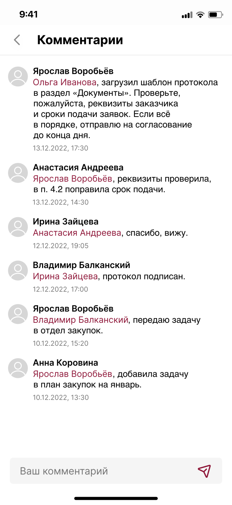

← Все кейсы
Продуктовый дизайн
Мобильное приложение AVC
Мобильные задачи и поручения: сроки, делегирование, обсуждения с коллегами и вложения по папкам.



Задачи и поручения
Проектировала мобильные сценарии работы с поручениями: список задач, подробную карточку, сроки и делегирование. Обсуждения и вложения доступны в контексте задачи — сотруднику не нужно собирать информацию в разных разделах.
Обсуждения и вложения
Проработала комментарии коллег и хранение вложений по папкам. На экранах показан путь от списка поручений к деталям задачи и обсуждению.